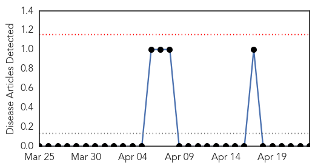
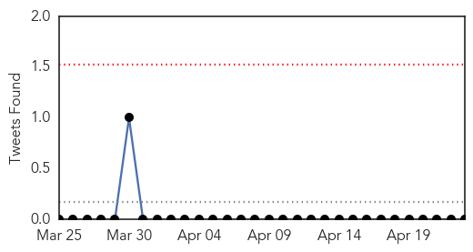

Bubonic Plague
30-Day Web Trend
0 alerts, 0 warnings

30-Day Twitter Trend
0 alerts, 0 warnings

Article Locations

Article Confidences

Top Articles:
-
No articles found for Apr 23, 2015
Top Tweets:
-
No tweets found for Apr 23, 2015
Measles
30-Day Web Trend
0 alerts, 0 warnings

30-Day Twitter Trend
0 alerts, 0 warnings

Article Locations

Article Confidences

Top Articles:
- 0.974
- California Department of Public Health declares measles outbreak over
- 0.967
- UNICEF, partners support mass vaccination campaign in Sudan - Xinhua
- 0.964
- UNICEF, partners support mass vaccination campaign in Sudan
- 0.950
- Hospital first sent measles patient home
- 0.944
- First They Came for the Anti-Vaxxers
- 0.902
- Nearly 8 million children in Sudan to be immunized against measles following deadly outbreak – UNICEF
- 0.862
- Austria sees increase in cases of measles outbreaks
- 0.852
- One child in 5 still not vaccinated – WHO
- 0.848
- State health officials sound measles alarm
- 0.830
- Health officials raise measles spread concerns
- 0.781
- Yemen violence death toll tops 1,000
- 0.680
- Study rules out link between autism, MMR vaccine even in at-risk kids
- 0.677
- Kenya : One child in five still not vaccinated, says World Health Organization
- 0.622
- World Immunization Week: 22 million infants miss out on basic vaccines, says WHO
- 0.610
- Modern Healthcare Modern Healthcare business news, research, data and events
- 0.604
- Catonsville High School parents warned of possible TB exposure
- 0.550
- World Immunization Week: UN warns global vaccination targets ‘far off track’
- 0.543
- WHO calls for renewed efforts in global vaccination - Xinhua
- 0.521
- News reader
- 0.506
- 10 U.S. States Now Considering Mandatory Vaccination
Top Tweets:
-
No tweets found for Apr 23, 2015